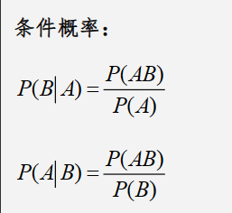

概率论
目录
1.1事件的关系及运算1.2古典概型
1.3几何概型
2.1条件概率、乘法公式
2.2全概率公式、贝叶斯公式
3.1离散型随机变量分布律、分布函数
3.2离散型随机变量函数的分布
3.3连续型随机变量的概率密度、分布函数
3.4连续型随机变量函数的分布
1.1事件的关系及运算
首先来看一下事件之间的关系，以文氏图举例

既然事件有了关系，那么必然也能进行运算，下面是一些常用的关系之间的运算公式（重点）

1.2古典概型
古典概型简单来说，需要满足两个条件
若在随机试验中样本空间只有有限多个样本点，样本点出现的可能性相同称这种试验为等可能随机试验或古典概型。
实际上是把“比例”转化为“概率”。从一个静态的过程变成动态的过程。一般来说计算内容有放不放回两种抽样
计算方法就是按照下面的组合公式列举情况相乘就好，简单来说就是在n个不同的元素中取m个不重复的元素形成一个子集相乘
比如在一箱子中共有7个球，3个黑球4个白球，取3个球就是n=7，m=3，取什么球n就是什么球的样本空间

1.3几何概型
很简单，就是将问题转换图像，计算所求概率在图中的占比

2.1条件概率、乘法公式
首先来说条件概率，顾名思义，在某个事件发生的情况下事件发生的概率

第一个公式表示的是z在A事件发生的条件下B事件发生的概率，第二个公式就是反过来
也就是斜杠后面的事件发生的条件下斜杠前面事件发生的概率=斜杠前后事件相交的概率/斜杠后面事件发生的概率
通过条件概率推导，即可得出乘法公式
举个例子，投一颗骰子，事件A为“点数大于3”，事件B为“点数为5”。则A条件下B发生的概率是多少？
由于是骰子，所以样本空间是1到6
通过条件概率公式，我们首先需要知道A与B相交的概率，由题可知，当点数为5时A与B相交，即相交的概率为⅙
A的概率为½，那么答案就是概率相比，结果为⅓
B的概率与A条件下的概率唯一的区别就是样本空间不同，前者样本空间为{1,2,3,4,5,6},后者为{4,5,6}
2.2全概率公式、贝叶斯公式
这里我们通过一道例题来讲解
甲、乙、丙三车间加工同一产品，加工量分别占总量25%，35%，40%次品率分别为0.03，0.02，0.01现从所有产品中抽取一个产品，试求：
(1)该产品是次品的概率?
(2)若检查该产品是次品，求该产品是乙车间生产的概率？
首先来看第一问，我们用全概率公式解题时是有几个步骤的
①设A为发生的事件
这里设事件A为该产品是次品
②找出完备事件组Bi;
也就是事件来源与哪几种途径或者哪几种情况
像是此题就是B1为甲厂生产，B2为乙厂生产，B3为丙厂生产
③写出P(Bi)及P(A|Bi)
由题可得
P(B1)=1/4; P(B2)=7/20 P(B3)=2/5;
P(A|B1)=0.03 P(A|B2)=0.02 P(A|B3)=0.01
④带入全概率公式

P(A)=P(B1)P(A|B1)+P(B2)P(A|B2)+P(B3)P(A|B3)=37/2000
这样第一问的答案就得出来了
接下来看第二问，明显是要我们求P(B2|A)的概率，这时我们就需要‘贝叶斯（逆概）公式’
代入公式可得出结果为 14/37
3.1离散型随机变量分布律、分布函数
首先举个例子
盒中有6个球，其中4个白球，2个黑球，从中任取2个球，求：
(1) 抽到白球数 X 的分布律； （2）随机变量 X 的分布函数
第一问很好求，X可以取0，1，2，只要根据之前学的古典概型分别算x即可，计算过后画一个表
第一问就解决了，接下来看第二问
首先来看一下分布函数的性质
所以能够看出，分布函数其实是有累加的形式，根据第四条，我们写范围时常写成累加形式
所以该题的分布函数

进行整理后，可以得到

而通过分布函数求分布律只需要先写分段点，也就是范围最前面的数，再用该分段点处的概率减去上一个概率就行，可以通过上题反推一下，这里不多赘述
3.2离散型随机变量函数的分布
这种通常是给你一个变量的分布律，让你求该变量形成的函数的分布律
算法很简单，计算函数的值，再合并相同项即可，这里给出例子
3.3连续型随机变量的概率密度、分布函数
先给出定义

我们可以发现，概率密度f(x)其实就是分布函数F(x)的导
这里给出一道例题
第一问通过定义一可算，二三问仅需要根据题意划定范围求积分即可要注意的是，分布函数是累加的，计算的时候也要将积分相加

接下来是连续型随机变量的分布函数，还是先列出性质

和离散型不一样的只有第二条，求导可以得到概率密度
所以，如果求系数就代入断点计算，求概率和离散型一样，求概率密度求导即可
3.4连续型随机变量函数的分布
分两种情况，g(X)单调可导以及非单调可导，根据步骤一步步计算即可，不多赘述


4.1离散型——二项分布
二项分布简单来说就是做n次重复的独立实验的概率
其中，n为实验的次数，p为每次实验的概率，若确定是二项分布，代入计算即可
4.2离散型——泊松分布
如果分布律满足下列，则称为泊松分布
4.3连续型——均匀分布

4.4连续型——指数分布